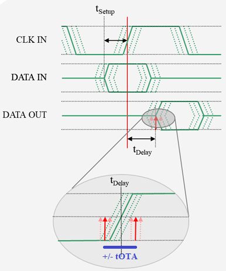
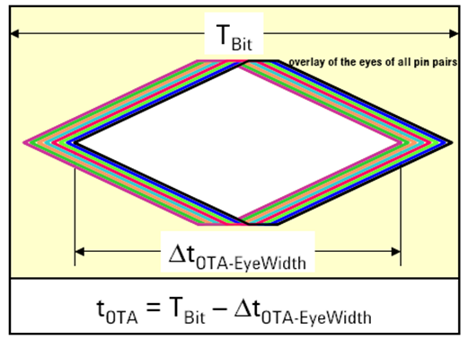
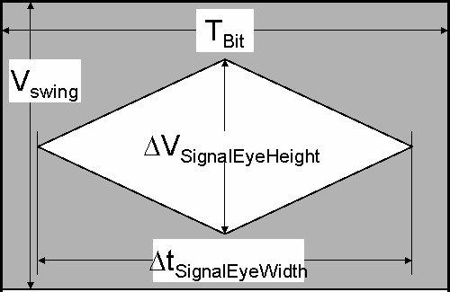

Pin Scale 5000 terms
- Edge placement accuracy tEPA
This is the worst case timing error of driver edges (or receiver edges) over all channels and settings.
It is tEPA = tOTA/2, refer to the explanation given below.
- Overall timing accuracy tOTA
This is the worst case timing error between driver and receiver edges over all channels and settings. In the figure below, tSetup + tDelay is the mean timing value for which a tester edge strobe is programmed. The maximum variation of tDelay is given by ±tOTA.

It is tOTA = tEPA of the driver + tEPA of the receiver = 2 * tEPA.
For an illustration of OTA in the eye diagram refer to the figure below.

- Eye height and eye width
For an illustration of the parameters ∆VSignelEyeHeight and ∆tSignelEyeWidth refer to the figure below.

- Ground sense voltage VGS
To support compliance to voltage force and measure specifications at the DUT pin, the PS5000 card provides ground sense inputs which, if properly connected to the DUT, enable to compensate for ≥ 97% (or ≥ 94% for the digital driver) of DUT ground offsets caused by test fixture GND wiring / plane resistance.
- Linearity error of AC performance
This is the maximum deviation of a periodic time stamp produced by an instrument from its conventional true value, given a constant conventional true value of the period between the time stamps. It is caused by non-linear characteristics of the hardware. This error refers to the timing accuracy of the I/O functions specified to be executed by the test system.
- Range
This is the interval between the minimum value and the maximum value which have been specified for a measurand.
- Full scale range (FSR)
The full scale range of a measurand is the maximum range of this measurand that can be processed according to its operational specification. If the measurand is found outside the FSR, distorting effects will have to be expected on the measurement result, such as clipping.
- Sensitivity
This is the quotient Δy/Δx, with the minimum value of a measurand difference Δx which will produce a detectable change Δy on the result of the measurement y, y = f(x).
- Resolution
- This is the minimum value of the measurand Δx used in the definition of sensitivity.
Functional changes
- Introduced in SmarTest 7.10.2